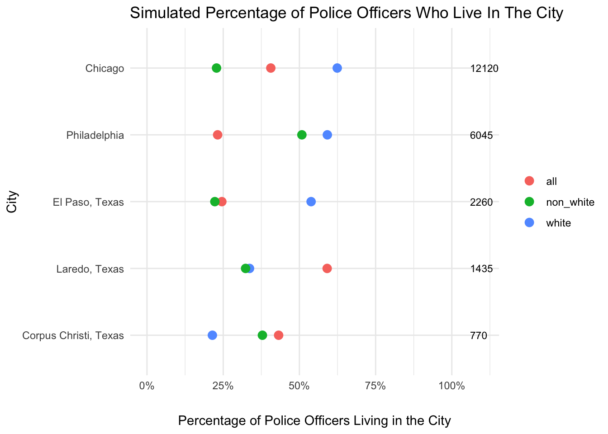

# Constructing the file path using here()
file_path <- here("presentation-exercise","data", "police-locals.csv")
# Importing the Excel file fromthe file path
police_data <- read.csv(file_path)Data visualization through complex diagrams
1 Introduction
Note: This project was completed as a requirement for course BIOS 7010: Modern Applied Data Analytics.
In this project, I will try to replicate some complex data visualization techniques. Complex in a sense that these techniques will include incorporating multiple informations about an observation or group of observation. But, the ultimate goal would be to present the data in a form that is as simple to understand as possible.
For this project, I have identified an article from the popular website fivethirtyeight.com. The article is titled “Most Police Don’t Live In The Cities They Serve” and it basically looks into the data of polica officers across multiple states to check how the choices among police officers are distributed.
For more information please visit: https://fivethirtyeight.com/features/most-police-dont-live-in-the-cities-they-serve/
2 Data Acquisition
First, we will import the data we acquired from fivethirtyeight, and have an initial look at it. The link to the graphical presentation and the actual data is provided in the introduction section.
In the above code, we imported the already downloaded dataset from our local directory. Now, we will look into some of the observations from the dataset. The head() function allows us to extract the first six observation in our dataset. The result is as follow:
# Viewing the uppermost data of the imported dataset
head(police_data) city police_force_size all white non.white black
1 New York 32300 0.6179567 0.44638656 0.7644189 0.770891365
2 Chicago 12120 0.8750000 0.87196262 0.8774003 0.89740566
3 Los Angeles 10100 0.2282178 0.15277778 0.2638484 0.387387387
4 Washington 9340 0.1156317 0.05677419 0.1573651 0.170189099
5 Houston 7700 0.2922078 0.17373461 0.3992583 0.36637931
6 Philadelphia 6045 0.8354012 0.77689873 0.8994801 0.924657534
hispanic asian
1 0.762860728 0.749235474
2 0.83982684 0.966666667
3 0.217679558 0.305263158
4 0.08988764 0.230769231
5 0.457142857 0.408163265
6 0.817391304 **3 Preview of the original graph
Below, I have attached a screenshot of the original graph from the website posted by the original aurthur Nate Silver. The graph has elegantly expressed the information on population proportion of police officers belonging to different racial groups across different states. The states are sorted in an ordered style with states with higher total percentage of officers living in the city at higher positions.

4 Replication of the visualization
Before starting to work on the actual dataset, let’s take a few minutes to simplify our objective. We can create a simple dataset with few observations and variables of interest and try to replicate the original graph in a simple form.
We have informations on city names, police force sizes, percentage of police officers living in the city, and their races. Now, lets go ahead and create those variables.
# Generate sample data
data <- data.frame(
city = c("Laredo, Texas", "Chicago", "Corpus Christi, Texas", "El Paso, Texas", "Philadelphia"),
police_force_size = c(1435, 12120, 770, 2260, 6045),
all = runif(5, 10, 70),
white = runif(5, 5, 65),
non_white = runif(5, 5, 65))
data <- data %>% arrange(desc(police_force_size))
data_long <- data %>%
pivot_longer(cols = c("all", "white", "non_white"), names_to = "category", values_to = "percentage")Now that we have the simulated dataset, we can work on our graph. We need the cities on the Y-axis (left), and percentage of police officers living in the city on the X-axis. The original graph also plots the information on the total number of police officers in the city on the Y-axis located at the right side. Since, R didnt support two different axes on the same graph, I used an extended x-axis to plot the total number of police officers for the respective cities.
ggplot(data_long, aes(x = percentage, y = reorder(city, police_force_size), color = category)) +
geom_point(size = 3) +
scale_x_continuous(breaks = c(0, 25, 50, 75, 100),
labels = c("0%", "25%", "50%", "75%", "100%"),
limits = c(0, 110)) +
labs(x = "Percentage of Police Officers Living in the City",
y = "City",
title = "Simulated Percentage of Police Officers Who Live In The City") +
theme_minimal() +
theme(legend.title = element_blank(),
axis.title.x = element_text(margin = margin(t = 20))) +
geom_text(aes(label = police_force_size, x = 106), hjust = 0, size = 3, color = "black", data = data)
So, I was able to simplify my final objective through few lines of code. Now, I will apply this same strategy on the original website data.
5 Final version of the code after repeated iterations
After going through multiple edits and back-and-forth modification of the graph, I ended up with the following code which helped me reach closest to the original graph:
5.1 Data Cleaning
At first, I reworked on the dataset to modify it into a form that will ease further analysis.
# Converting character columns to numeric where necessary
police_data <- police_data %>%
mutate(across(c(all, white, non.white), as.numeric)) # Focusing only on 'all', 'white', 'non.white'
# Reshaping data to long format, including only relevant categories
data_long <- police_data %>%
pivot_longer(cols = c("all", "white", "non.white"),
names_to = "category",
values_to = "percentage")After a quick modification, we are now able to plot the graph. We are just applying the same technique of graphing that we used for our simulated dataset.
# Creating the plot
p <- ggplot(data_long, aes(x = percentage, y = reorder(city, percentage), color = category, fill = category)) + # Ordering cities by 'percentage'
geom_point(shape = 21, colour = "black", size = 2, stroke = 0.5) +
scale_x_continuous(breaks = seq(0, 1, by = 0.25), # Adjusting breaks for decimal values
labels = scales::percent_format(accuracy = 1), # Formatting as percentages
limits = c(0, 1.10), # Adjusting limits for decimal values
position = "top") +
labs(x = "", y = "", title = "Percentage of Police Officers Living in the City") +
scale_color_manual(values = c("all" = "dodgerblue", "white" = "black", "non.white" = "forestgreen")) + # Adjust color for categories
scale_fill_manual(values = c("all" = "dodgerblue", "white" = "black", "non.white" = "forestgreen")) + # Fill colors for shape 21
theme_minimal() +
theme(
legend.title = element_blank(),
plot.title = element_text(hjust=0.5, margin = margin(b = 20), face = "bold", size = 12.5),
axis.title.x = element_blank(),
axis.text.x = element_text(hjust = 0.5),
plot.margin = margin(10, 10, 10, 60) # Increasing left margin for y-axis labels
) +
annotate("text", x = 0, y = Inf, label = "Cities", fontface = "bold", hjust = 2, vjust = -2.3) +
annotate("text", x = 1.05, y = Inf, label = "Number of Police", fontface = "bold", hjust = 0.1, vjust = -2.3) +
geom_text(aes(label = police_force_size, x = 1.05), hjust = 0, size = 3, color = "black",
data = data_long %>% filter(category == "all")) + # Useing data_long filtered for 'all' category
scale_y_discrete(expand = expansion(add = c(0.5, 0.5))) + # Adding spacing to y-axis
coord_cartesian(clip = "off") # Allowing labels to go outside the plot area
# Saving the plot as a JPEG file
ggsave(here("presentation-exercise", "images", "police_officers_plot.jpeg"),
plot = p, width = 6.2, height = 10.2, dpi = 300, limitsize = FALSE)Warning: No shared levels found between `names(values)` of the manual scale and the
data's colour values.As we can observe, the graph I created is mostly identical to the original plot except some differences in shape fill objects and scale of the image. I was able to successfully place the values on x-axis and on both sides of the y-axis as the original author did. I placed the legend for categories on the right side to avoid over-crowding at the top.

Now, as we have successfully replicated the graph, we will also try to represent the data in a tabular form. But, before moving into tabulation, we will rename our variable if they have strange characters in their name.
One of such variable was “non.white”. We modified it accordingly.
police_data <- police_data %>%
rename(non_white = non.white)6 Tabulation
In this section, we will create an advance table based on the same data we collected for the above graph.
We will first analyse the data and filter out only the top 10 cities with largets police force as considering all the 100+ cities would make tables visually complex and difficult to read.
# Converting percentage columns to numeric
police_data <- police_data %>%
mutate(across(c(all, white, non_white, black, hispanic, asian), ~ suppressWarnings(as.numeric(.)))) %>%
replace_na(list(all = 0, white = 0, non_white = 0, black = 0, hispanic = 0, asian = 0))
# Defining a function to map values to appropriate RGBA colors
color_transparency <- function(value) {
ifelse(value < 0.25, "rgba(255,165,0,0.25)", # 75% transparent
ifelse(value < 0.50, "rgba(255,165,0,0.50)", # 50% transparent
ifelse(value < 0.75, "rgba(255,165,0,0.75)", # 25% transparent
"rgba(255,165,0,1.00)"))) # Fully opaque
}
# Summarizing police data
police_summary <- police_data %>%
arrange(desc(police_force_size)) %>%
head(10) # Keeping the top 10 largest police forces for a concise table
# Calculating averages for the summary
averages <- police_summary %>%
summarise(
city = "Average",
police_force_size = mean(police_force_size, na.rm = TRUE),
all = mean(all, na.rm = TRUE),
white = mean(white, na.rm = TRUE),
non_white = mean(non_white, na.rm = TRUE),
black = mean(black, na.rm = TRUE),
hispanic = mean(hispanic, na.rm = TRUE),
asian = mean(asian, na.rm = TRUE)
)
# Combining the summary and averages
police_summary_with_averages <- bind_rows(police_summary, averages)Now that we have found out the averages and top 10 cities with largest police forces, we will go ahead and plot a table with colors representing the intensity or the percentage of police officers living in different cities.
# Creating the formatted table
gt(police_summary_with_averages) %>%
tab_header(
title = md("**Police Force Residency and Demographics**"),
subtitle = md("*Percentage of police officers living in the city they serve, broken down by race*")
) %>%
tab_spanner(
label = "Percentage of Officers Living in the City",
columns = c(all, white, non_white, black, hispanic, asian)
) %>%
fmt_number(
columns = c(all, white, non_white, black, hispanic, asian, police_force_size),
decimals = 1
) %>%
data_color(
columns = c(all, white, non_white, black, hispanic, asian),
fn = function(x) sapply(x, color_transparency) # Applying the color function
) %>%
cols_label(
city = "City",
police_force_size = "Total Officers",
all = "Total (%)",
white = "White (%)",
non_white = "Non-White (%)",
black = "Black (%)",
hispanic = "Hispanic (%)",
asian = "Asian (%)"
) %>%
tab_footnote(
footnote = "Data represents the available statistics on police force residency based on FiveThirtyEight.",
locations = cells_title(groups = "title")
) %>%
tab_caption("Table 1: Residency rates of police officers by race across 10 major U.S. cities.")| Police Force Residency and Demographics1 | |||||||
|---|---|---|---|---|---|---|---|
| Percentage of police officers living in the city they serve, broken down by race | |||||||
| City | Total Officers |
Percentage of Officers Living in the City
|
|||||
| Total (%) | White (%) | Non-White (%) | Black (%) | Hispanic (%) | Asian (%) | ||
| New York | 32,300.0 | 0.6 | 0.4 | 0.8 | 0.8 | 0.8 | 0.7 |
| Chicago | 12,120.0 | 0.9 | 0.9 | 0.9 | 0.9 | 0.8 | 1.0 |
| Los Angeles | 10,100.0 | 0.2 | 0.2 | 0.3 | 0.4 | 0.2 | 0.3 |
| Washington | 9,340.0 | 0.1 | 0.1 | 0.2 | 0.2 | 0.1 | 0.2 |
| Houston | 7,700.0 | 0.3 | 0.2 | 0.4 | 0.4 | 0.5 | 0.4 |
| Philadelphia | 6,045.0 | 0.8 | 0.8 | 0.9 | 0.9 | 0.8 | 0.0 |
| Phoenix | 4,475.0 | 0.3 | 0.3 | 0.4 | 0.5 | 0.4 | 0.0 |
| San Diego | 4,460.0 | 0.4 | 0.4 | 0.3 | 0.5 | 0.3 | 0.5 |
| Dallas | 3,605.0 | 0.2 | 0.2 | 0.2 | 0.2 | 0.3 | 0.0 |
| Detroit | 3,265.0 | 0.4 | 0.1 | 0.5 | 0.6 | 0.3 | 0.0 |
| Average | 9,341.0 | 0.4 | 0.3 | 0.5 | 0.5 | 0.5 | 0.3 |
| 1 Data represents the available statistics on police force residency based on FiveThirtyEight. | |||||||
The cells are formatted according to the values with larger proportion or larger percentage being assigned a darker color. This means that a city or race with comparatively higher proportion of police force living in the city will showw up with a darker color. For example, Among the top 10 cities with largest police force, New York, Chicago and Philadelphia have comparatively greater proportion of police officers living in the city across all races.